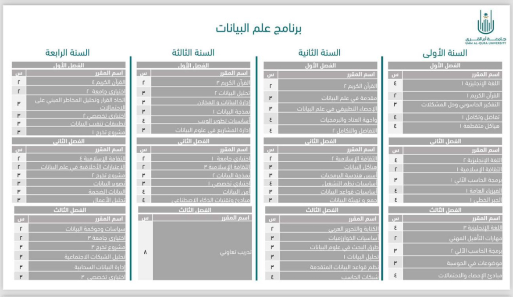

تخصص علم البيانات
علوم الحاسب
علم البيانات
أمن السيبراني
الذكاء الاصطناعي
تفاعل الإنسان مع الحاسب
هندسة البرمجيات
هندسة الحاسب والشبكات
عن علم البيانات
علم البيانات هو تخصص يركز على استخراج المعرفة من البيانات، ويشمل التحليل الإحصائي وتعلم الآلة.
المنهاج الدراسي

دورات مجانية
Johns Hopkins Data Science Specialization - Coursera
Data Science Professional Certificate - edX
Intro to Data Science - Udacity